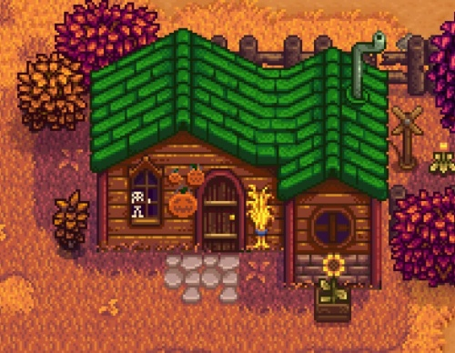

| Mines | |
 | |
Cindersap ForestCindersap Forest is the area located south of The Farm, and includes the Traveling Cart, the Wizard's Tower, the Abandoned House, Leah's Cottage, and Marnie's Ranch. It has exits to the North into the farm, the East into Pelican Town, to the South into The Sewers, and to the North-West into the Secret Woods. Marnie's Ranch Located in the northeast corner of the map, this is where you can purchase animals and animal related goods. Marnie lives here with her niece and nephew, Shane and Jas. Leah's Cottage Leah's Cottage is the home of Leah. It's located south of Marnie's Ranch and just south of the eastern passage to Pelican Town in Cindersap Forest, south of The Farm. The Player cannot enter without first gaining at least two friendship points with Leah. PondA large body of water in the center of the map. A small pier juts out into it for fishing. River Fish can be caught. Abandoned HouseLocated to the southwest of the pond, this run down building will open up shop when you start earning Achievements. Once open for business, a mouse will sell you hats based on the achievements you've unlocked. Wizard's TowerLocated on the western side of the map, the Wizard lives here. You can enter the tower once you have been in the Community Center for the first time, examined the letter in the Crafts Room, and received a letter from the Wizard. Secret woodsAn area in the northwest corner of the map that you can open up once you have a Steel Axe. It is a natural habitat for a variety of Slimes and a good source of Hardwood. Note that there is a hidden section accessible by walking down through the trees, which contains more stumps, slimes and potential foraging spots. Traveling CartAppears every Friday and Sunday along the northern edge of the map and sells a wide selection of random goods. The SewersThe Sewers are unlocked by obtaining the Rusty Key after donating 60 Artifacts to the Museum. They can be entered either through the sewer cover in the south of Pelican Town or through the grates in the south of Cindersap Forest. Krobus is also located here and sells rare items. | |